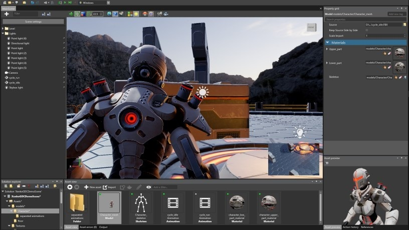

Stride manual

These pages contain information about how to use Stride, an open-source C# game engine.
Stride community toolkit
Check out our Stride community toolkit for additional helpers and extensions.
Improve this documentation
The Stride documentation is open source, so anyone can edit it. If you find a mistake, you can correct it or comment in GitHub.
To edit any page of this manual, click the Edit this page link at the bottom. Please make sure to follow the writing guidelines.
Latest documentation
Recent updates
- Manual
- Rewritten Get Started - Section rewritten
- New Install and update - New install and update section
- New Stride for Godot developers - New guide for people coming from Godot
- New Project - New project section
- Updated Scripts - Types of script - Updated types of script and created sub-pages for each script type
- Contributing
- Updated Contribute to the engine - Bug bounties - Clarified a couple of points
- Community resources
- Updated Games and demos - Improved the list of released games
Previous updates
- Manual
- Updated Scripts - Best Practices - More content added
- Updated Physics - Script a trigger - Example updated
- Updated Physics - Triggers - Example updated
- Updated Graphics - Custom shaders - Troubleshooting section added
- New Glossary - New glossary section added
- Tutorials
- Contributing
- Updated Contributing - Roadmap - GitHub Project - Roadmap link added
- New Contributing - Core team - The Stride core team
- Updated Contributing - Roadmap - Status added